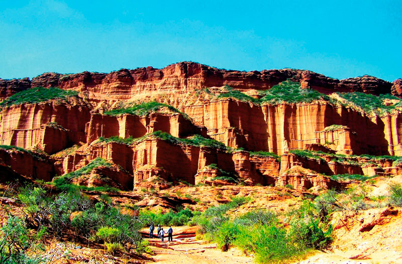
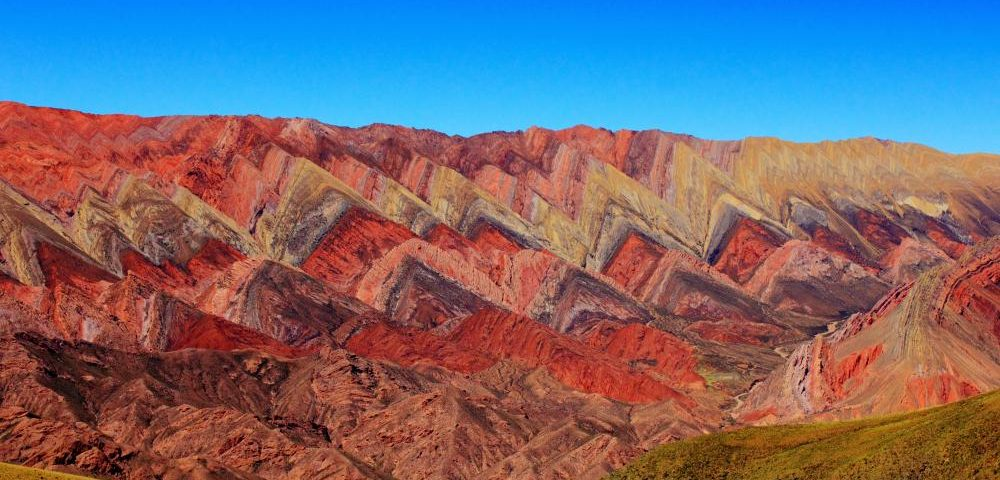
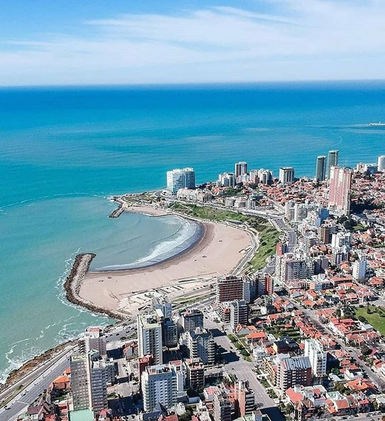
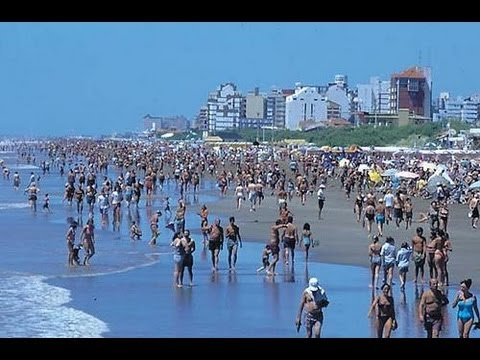

« Volver
¿Que lugares recorrió?
Amelia nació en la Ciudad Autónoma de Buenos Aires, Argentina  y vivió allí siempre.
y vivió allí siempre.
Sin embargo, Amelia es una persona que gusta de viajar por su país y visitó muchos lugares como...
Bariloche

Una bella ciudad rionegrina cuyos lagos atraen a miles de turistas cada año.
Córdoba

La segunda ciudad más grande de Argentina, misteriosamente lejos de la costa.
San Luis

Bella provincia del este del Cuyo argentino.
Misiones

La partecita selvática de la Argentina.
Salta

Le dicen "Salta la Linda", creo que se entendió.
Mar del Plata

Cuarta ciudad más grande de la Argentina. Es a donde la gente va cuando dice "Me voy a la costa una semana".
Pinamar

Ciudad bonaerense con costa atlántica orientada al turismo.
Miramar

Ciudad bonaerense con que originalmente tenía problemas con las dunas, que arruinaban cultivos, y que ahora nadie podría adivinar su pasado arenoso.
San Bernardo

"La Perla de la Costa".
« Volver